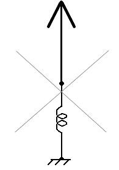
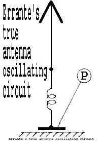

|
Sistema capacitivo di messa a
terra per RF
Addio al piano di
terra!
|

|

|
Come polarizzare
correttamente un sistema sbilanciato per segnali a radio-frequenza rispetto
alla terra fisica.
Questo sistema dimostra che
non � necessario alcun accoppiamento galvanico verso terra per ottenere la
corretta messa a terra per segnali elettrici a
radio-frequenza.
Sistema capacitivo di messa a terra
per RF
by Francesco Errante
Faccio seguito a quanto da me rivelato e dimostrato in
precedenza in materia di riferimento di terra per i trasduttori
radio-elettrici e linee di trasmissione per segnali radio-elettrici. In questa
sede rivelo e dimostro che non � necessario alcun accoppiamento galvanico verso
terra per ottenere una corretta polarizzazione di un sistema sbilanciato per RF
rispetto alla terra fisica.
TUTTO QUELLO CHE SERVE � una CAPACIT� CONCENTRATA grande abbastanza da esibire
una bassissima reattanza capacitiva (<0.5% del valore d'impedenza del
radiatore) alla frequenza di lavoro pi� bassa di un dato sistema RF
sbilanciato, come mostrato nello schema che segue:
Errante's CAPACITIVE RF EARTH GROUNDING SYSTEM
schematic diagram.
An unbalanced radiator and its Un-Un impedance transformer being grounded to
the earth by means of a capacitive plate (P) coupled through a dielectric layer
to the physical ground - Copyright © 2009 - Francesco Errante
�
Errante's ONE-WIRE UNBALANCED RF TRANSMISSION LINE,
employing Errante's CAPACITIVE RF EARTH GROUNDING SYSTEM - Copyright © 2009 -
Francesco Errante
La capacit� di messa a terra �
ottenuta accoppiando un punto di un circuito radio-elettrico che necessita di
trovarsi a 0 Volt rispetto a terra, direttamente alla terra fisica per mezzo di
un'armatura metallica (P) posta su di un piano parallelo ad
una superficie uniforme di terra ed isolata dalla stessa da uno strato di
materiale dielettrico di adeguate dimenzioni, come mostrato nelle immagini
sopra. (E NON attraverso un condensatore di uguale valore!!! � Anche
Guglielmo Marconi e' incorso in questo errore, come documentato nella sua
lectio magistralis
del 1909 in occasione del suo Premio Nobel)
Nello spettro delle onde medie, lunghe e lunghissime, allo scopo di aumentare
la capacit� di messa a terra, l'armatura pu� essere tri-dimenzionale nella
forma di un cubo o di un cilindro cavo interrato ma isolato dalla terra. Il
volume da esso occupato pu� essere riempito con del calcestruzzo ed usato come
fondamenta per torri auto-radianti. Con evidente riduzione dei costi per la
realizzazione delle antenne per trasmissioni in VLF per radiodiffusione e
militari.
NB. Il sistema pu� anche essere dotato di percorso galvanico di
messa a terra, allo scopo di proteggere gli impianti dai fulmini. Questo
percorso pu� essere realizzato mediante un avvolgimento anti-induttivo (RF
choke) connesso tra l'armatura (P) ed un'apposita palina di
terra.
L'arrangiamento a semi-condensatore, mostrato negli schemi di cui
sopra, NON deve essere confuso per un "piano di terra". Si
comprende facilmente, come per esempio, un'armatura metallica di un metro
quadrato circa possa difficilmente fungere da piano di terra in un
sistema a 3.5 MHz, mentre risulta molto efficace se ad essere impiegata � la
sua reattanza capacitiva. Al contrario, i sistemi di piano di terra a raggiera,
ancora in uso, sono di fatto delle rudimentali capacit� distribuite affette da
enormi perdite.
Un'applicazione pratica, a dimostrazione di questo
sistema, � data� dal SISTEMA MULTIBANDA HF
di Errante, con radiatori a 225 Ohm�� e suo sistema di
alimentazione RF sbilanciato, con messa a terra capacitiva.
L or C Reactance Calculator
Enter any two known values and press "Calculate" to solve
for the others. For example, a 1 uF capacitor or a 25.3 mH inductor will have
159 Ohms of reactance at a frequency of 1000 Hertz. Fields should be reset to 0
before doing a new calculation.
Inductive Reactance (Xl) = 2 * Pi * F * L
Capacitive Reactance (Xc) = 1 / ( 2 * Pi * F * C )
Resonant Frequency (Fo) = 1 / ( 2 * Pi * SquareRoot(LC) )
Applet by Bill Bowden
© 22nd. October 1999 Bill Bowden - All rights reserved.
|